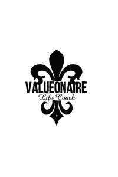

Trade Mark Journal No.2025/042 17 October 2025
UK00004276124 10 October 2025 (41)

- Class 41
- Education; providing of training; providing of coaching; Providing courses of instruction; entertainment services; sporting and cultural activities; arranging, conducting and provision of training courses relating to lifestyle, fashion and business; provision of practical training and demonstrations relating to lifestyle, fashion and business; arranging, organising and conducting of conferences, workshops, seminars, conventions, fairs, symposia, events and exhibitions relating to lifestyle, fashion and business; arranging, organising and conducting of games, contests and competitions relating to lifestyle, fashion and business; hospitality services (entertainment); arranging, organising and conducting of award ceremonies relating to lifestyle, fashion and business; provision of entertainment via podcast; health club services; entertainment, training, recreational and sporting information services provided via the Internet and other communications networks relating to lifestyle, fashion and business; education and entertainment services provided by means of radio, television, telephony, the Internet and on-line databases relating to lifestyle, fashion and business; entertainment and educational services featuring electronic media, multimedia content, audio and video content, movies, pictures, photographs, graphics, images, text and related information provided via the Internet and other communications networks relating to lifestyle, fashion and business; film production relating to lifestyle, fashion and business; production of video recordings, sound recordings, DVDs, CDs, CD-ROMs, video and audio tapes relating to lifestyle, fashion and business; production of television and radio programmes featuring electronic media, multimedia content, audio and video content, movies, pictures, photographs, graphics, images, text and related information provided via the Internet and other communications networks relating to lifestyle, fashion and business; film production relating to lifestyle, fashion and business; production of video recordings, sound recordings, DVDs, CDs, CD-ROMs, video and audio tapes relating to lifestyle, fashion and business; production of television and radio programmes relating to lifestyle, fashion and business; publication of magazines, books texts and printed matter relating to lifestyle, fashion and business; publishing by electronic means; providing online electronic publications (not downloadable); provision of television programmes, radio programmes, films, audio and/or visual material and games online (not downloadable) relating to lifestyle, fashion and business; provision of news online relating to lifestyle, fashion and business; provision of cinematographic and video entertainment relating to lifestyle, fashion and business; production of sound and/or video recordings; audio and video recording services; photographer services; music recordings studio services; sport camp services; physical education; recreation and training services; training services; career and vocational training; providing on-line electronic publications relating to careers, current events, biographies; information, advisory and consultancy services relating to all of the aforesaid services.
Valueonaire Un Limited